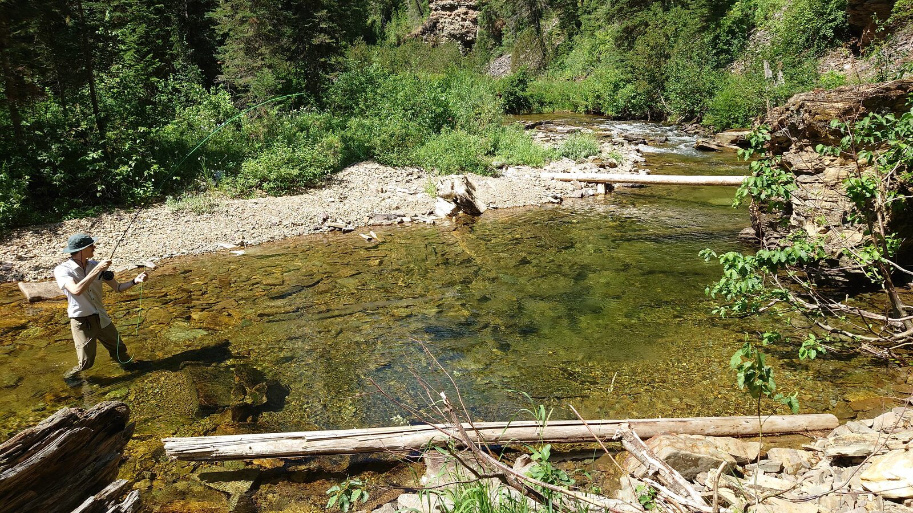
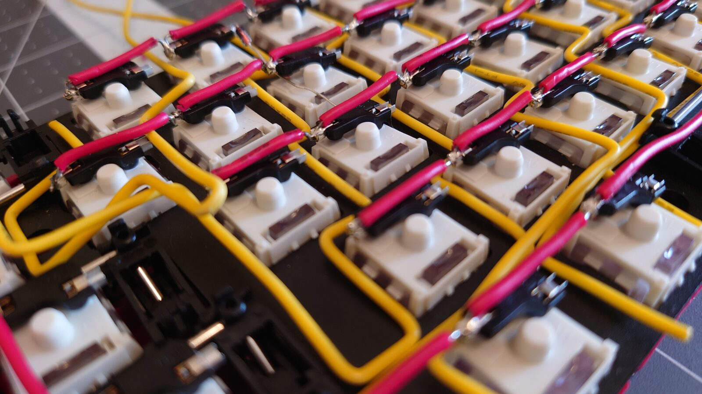

Static Image Loading
Working out how images work in Astro, to build a better gallery.
For some reason, I can't get the style to apply from the Layout file. That's annoying. I'm not really feelin this task at the moment now, so maybe I'll come back to it later.
I'd like to understand how images in Astro work because from what I understand, this could save me a ton of time building a better gallery.
It seems the integration I wanted to use to help optimize image loading isn't working on windows, so I'm scraping that idea for now. Sorry for the poor performance loading these!

